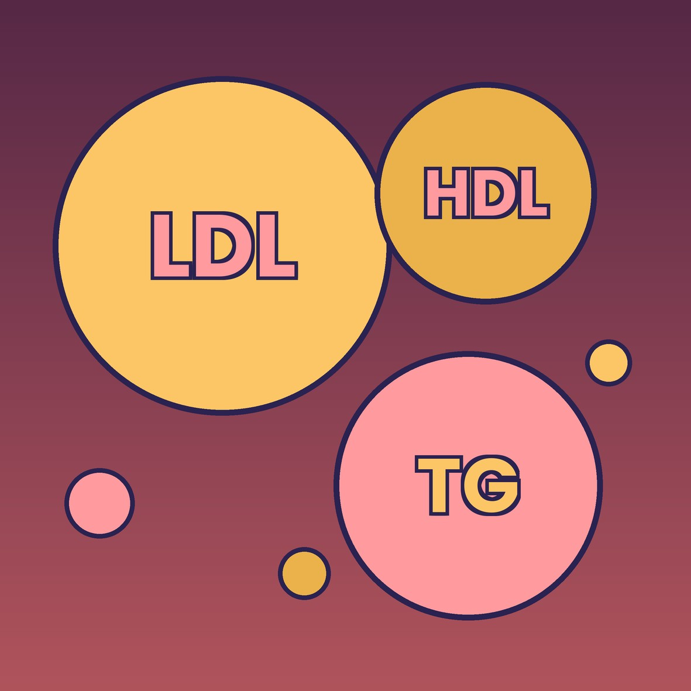

Understanding Cholesterol: LDL, HDL, Triglycerides and Why Your Numbers Matter
Cholesterol has a bad reputation, but your body needs it. It is a waxy, fat-like substance that your liver makes and that you also get from food. It builds the walls of every cell, helps make hormones and vitamin D, and is used to produce the bile that digests fat.
The problem is not cholesterol itself, but having too much of the harmful kind, or too little of the protective kind. And because abnormal cholesterol causes no symptoms, you can feel perfectly well while the damage builds up quietly over many years. Understanding what each number on your blood test means is the first step to protecting your heart and arteries.
How cholesterol travels in your blood
Fat and water do not mix, so cholesterol cannot float freely in your blood. It travels inside tiny packages called lipoproteins, made of fat on the inside and protein on the outside. The different types of cholesterol on your report are really the different “delivery vehicles”, and they behave very differently.
The different types, in plain language
LDL cholesterol: the “bad” one
LDL (low-density lipoprotein) carries cholesterol from the liver to the rest of the body. When there is too much of it, the excess slips into the walls of your arteries and builds up as fatty deposits called plaque. Over years, plaque narrows the artery and can crack, forming a clot that blocks blood flow and causes a heart attack or stroke. LDL is the main target of cholesterol treatment, and the lower it is kept (within your personal target), the lower the risk.
HDL cholesterol: the “good” one
HDL (high-density lipoprotein) helps carry cholesterol away from the arteries and back to the liver for disposal. A higher HDL is generally a good sign, and a low HDL often goes together with excess weight, inactivity, smoking, diabetes and high triglycerides. One important nuance: medicines that simply raise HDL have not been shown to protect the heart, so the aim is to improve HDL through lifestyle (exercise, a healthy weight, not smoking) and to focus treatment on lowering LDL.
Non-HDL cholesterol: the “all the harmful particles” number
Non-HDL cholesterol is simply your total cholesterol minus your HDL. It adds up LDL plus all the other cholesterol-carrying particles that can damage arteries, including those that rise with high triglycerides. Doctors increasingly use it because it is a good overall measure, especially when triglycerides are raised or diabetes is present.
Triglycerides: a different blood fat
Triglycerides are not cholesterol, but they are measured on the same test and matter just as much. They are the most common fat in your blood: your body makes them from extra calories, especially from sugar, refined starches and alcohol, and stores them as an energy reserve. High triglycerides raise heart risk, are linked to fatty liver and diabetes, and, when very high, can cause a painful inflammation of the pancreas (pancreatitis).
Total cholesterol
This is the sum of everything: LDL, HDL and a portion linked to triglycerides. It is a useful first look, but it can be misleading on its own. Someone with a “normal” total cholesterol can still have a high LDL and a low HDL, which is why your doctor looks at the individual numbers.
What are normal ranges?
These are rough guides for adults. They are measured on a blood test called a lipid profile, which for most people does not require fasting (follow your doctor's instructions).
| Measure | Desirable range | Comment |
|---|---|---|
| Total cholesterol | Below about 5.2 mmol/L (200 mg/dL) | A first look only; read it together with the other numbers |
| LDL cholesterol | Individual target. Often below 3.0 mmol/L (115 mg/dL) for people with no other risk factors; well below 1.8 mmol/L (70 mg/dL) for people with heart disease or diabetes | The higher your overall risk, the lower your LDL should be |
| HDL cholesterol | Above 1.0 mmol/L (40 mg/dL) in men; above 1.3 mmol/L (50 mg/dL) in women | Higher is generally better; low HDL is a warning sign |
| Non-HDL cholesterol | Often below 3.4 mmol/L (130 mg/dL), lower if your risk is high | Total cholesterol minus HDL |
| Triglycerides | Below 1.7 mmol/L (150 mg/dL) | 2.3 mmol/L (200 mg/dL) or more is high; above about 10 mmol/L (880 mg/dL) needs urgent care |
There is no single target for everyone. Your ideal numbers depend on your overall risk: age, blood pressure, diabetes, smoking, family history, and whether you have already had a heart attack, stroke or stent. Ask your doctor what your own targets are.
Why keep your cholesterol in range?
- It protects your arteries. Too much LDL, or too many triglyceride-rich particles, feeds the build-up of plaque (atherosclerosis). This narrows the arteries to the heart, brain, kidneys and legs.
- It lowers the risk of heart attack and stroke. These are the major consequences, and they often strike without warning. Blocked leg arteries and kidney damage are also possible.
- The damage is silent and cumulative. There are no symptoms until the artery is badly narrowed or a clot forms. The total amount of LDL your arteries are exposed to over your lifetime matters, which is why it pays to act early rather than wait for a problem.
- Very high triglycerides can cause pancreatitis. This is a painful and sometimes dangerous inflammation of the pancreas.
- Reducing it works. Lowering LDL through diet, exercise and, where needed, medicine reduces the risk of heart attack and stroke, and the benefit is greatest in people at high risk.
Heart disease and diabetes are common in Mauritius. People of South Asian origin tend to develop heart disease earlier and often have a pattern of high triglycerides and low HDL, so checking your numbers early is especially worthwhile.
What pushes the numbers off track?
- A diet rich in fried food, ghee, butter, palm and coconut oil, fatty and processed meats and pastries (raises LDL)
- Sugary drinks, sweets, refined starches and alcohol (raise triglycerides)
- Excess weight, especially around the waist, and little physical activity
- Smoking, which lowers HDL and makes LDL more harmful
- Diabetes or prediabetes, an underactive thyroid, kidney disease or fatty liver
- Certain medicines. Never stop a prescribed medicine on your own; ask your doctor.
- Family history. Very high cholesterol, especially in a young person, can be inherited (familial hypercholesterolaemia) and needs specialist attention.
How often should I be tested?
All adults should have their cholesterol checked at least once, and again every few years if the result is normal. Test more often if you have diabetes, high blood pressure, kidney disease, excess weight, you smoke, or a close relative had a heart attack or stroke at a young age (before about 55 in men, 65 in women). If you are already on treatment, your doctor will recheck your levels regularly to make sure you are reaching your target.
When to see a doctor
Book a check-up and a lipid test if you have not had one, or if any of these apply:
- A previous test showed high LDL or triglycerides, or low HDL
- You have diabetes, prediabetes, high blood pressure, kidney disease or you smoke
- A close relative had a heart attack or stroke at a young age, or very high cholesterol
- You have had a heart attack, stroke, stent or bypass
Seek emergency care immediately for chest pain, sudden breathlessness, sudden weakness, facial droop or difficulty speaking, or severe persistent upper abdominal pain spreading to the back with nausea or vomiting. These are not symptoms to wait on.
In short
- LDL is the “bad” cholesterol, HDL is the “good” one, and triglycerides are a separate blood fat. All three matter.
- Abnormal levels cause no symptoms but silently damage your arteries over years.
- Your ideal targets depend on your personal risk, so ask your doctor what yours are.
- Diet, activity, a healthy weight and not smoking improve every number, and medicine is added when needed.
- Get tested, and have it rechecked regularly.
Have a question about your own cholesterol or heart risk? Message directly and ask.
Message on WhatsAppThis article is general health information and does not replace a medical consultation. Targets and treatment depend on your individual risk, so discuss them with your doctor. In a medical emergency, call SAMU (114) or go to your nearest hospital.